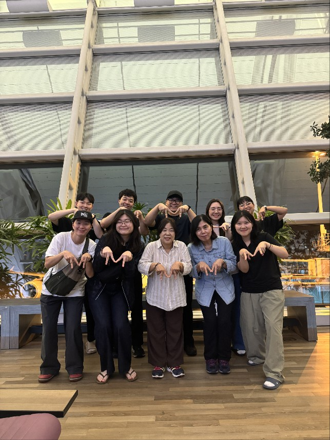
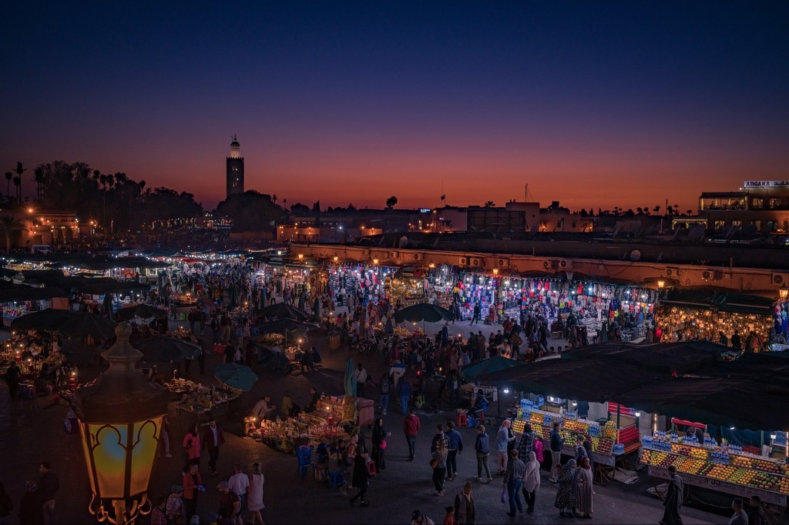
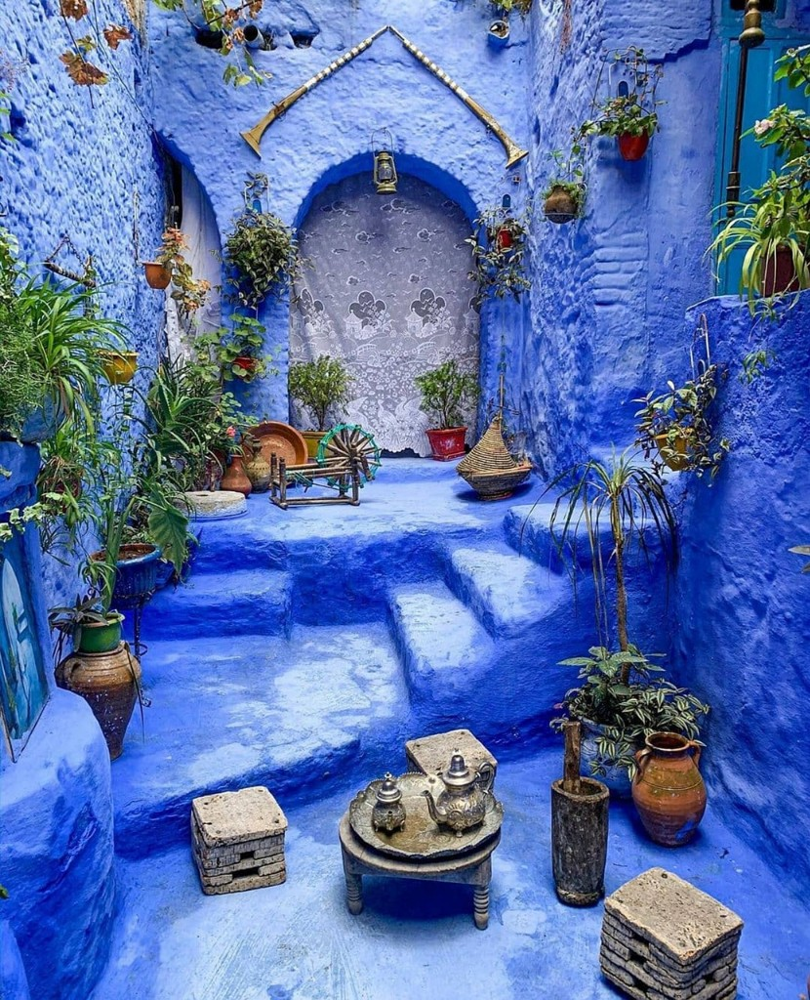

저는 이번에 시니어 팀에 소속되어 50, 60대 집사님과 함께 모로코에 갔습니다. 시니어분들과 여러 차례 단기사역을 함께한 적이 있는데, 시니어분들은 청년들과 다르게 경험이 많고 한 영혼을 향한 사랑의 마음이 참 깊다는 것을 보게 됩니다. 또한 시니어분들은 개인을 넘어 공동체와 가정을 보는 관점이 있으시기에, 누가 소외되어 있고 돌봄이 필요한지, 어떤 아픔이 있는지를 보고 가정 안에서 분별하시고 그 마음을 헤아리시는 그 사랑을 저로서 많이 배우게 됩니다. 이번 단기사역에서도 시니어분들 안에서 생명을 살리시는 하나님의 형상을 보고 배우게 되었습니다.

<함께했던 팀원들>
평소와 똑같이 말씀을 보고 그날 하루를 A 마을에 돌아다니게 되었습니다. 시니어분들과 함께하다 보니 오래 걷지 못하고 그늘에서 앉아 잠시 기도하는 시간을 가졌습니다. 그런데 놀랍게도 가방을 내려놓은 지 3분도 되지 않아 지나가던 L 자매가 저희를 보더니 이름도 국적도 묻기 이전에 자기 집에 와서 자고 가라고 이야기했습니다. 어김없이 신기한 인도하심앞에 감사한 마음으로 가정과 교제하는 시간을 가졌고, 저희 팀을 너무 환대해주며 음식을 주고 가정에서 머물라고 초대해주었습니다.
하나님이 예비하신 영혼인 것 같다는 마음이 생겨, 이 가정과 교제하며 그들의 삶을 들으며 깊은 교제를 해야겠다는 생각이 들었습니다. 아무래도 복음을 전하기 이전에 깊은 관계를 맺고 마음의 고민과 속이야기들이 나누어져야 더 복음을 받아들일 것 같다는 저의 경험 때문이었는데, 상황이 생각처럼 풀리지 않아 저의 마음은 타들어 갔고, 해가 떨어지니 우리 팀의 시니어분들의 체력이 급격하게 떨어지셔서 우리 팀과 계속해서 교제하고 싶어 하는 현지가족들의 아쉬움을 뒤로하고 일찍 취침하기로 했습니다.
이들에게 복음을 전할 수 있을까? 우리 팀의 시니어분들이 복음을 잘 나눌 수 있을까? 하는 걱정과 함께 잠을 자게 되었습니다. 하지만 다음 날 오전이 되니 아이들은 잠에 빠져있고, 우리와 교제하고 싶어 하는 L 자매의 엄마와 이모가 일찍 일어나 저희를 기다리고 있었습니다. 너무나 자연스레 깊은 교제를 할 수 있는 시간을 가지고, 우리 팀의 60대 시니어 분이 자기 간증을 나누고 싶다고 이야기하여 L 자매의 이모에게 삶을 나누었습니다.
"나는 5자매의 첫째야. 근데 어렸을 적에 아버지가 일찍 돌아가시고 엄마와 함께 가정을 책임지기 위해 고등학교를 졸업하고 타지에서 오랜 세월 일하며 외롭게 지내왔어. 힘들기도 하고 외롭게 살았는데, 일하던 곳에서 교회 다니는 사람을 만나서 함께 교회를 갔고 그때 예수님을 만나서 내 삶이 변하게 되었어. 외롭고 고독했던 삶에 하나님이 함께하시고 영원한 구원의 기쁨을 알게 되었어. 너도 예수님을 알았으면 좋겠어."
L 자매의 이모는 이 이야기를 듣자마자 자기의 삶과 똑같다고 나누어주었습니다. 알고 보니, 어렸을 적에 아버지가 돌아가셔서 10살 때부터 물건을 팔며 지내왔고 본인도 동생만 5명이 있는 가정에 첫째라서 힘들게 살았다는 것입니다. 당장 기독교로 개종하지는 못하지만, 우리의 이야기를 듣고 많은 감동을 받았으며 자신도 예수님의 이름으로 기도해보겠다고 나눠주었습니다..!
할렐루야..! 하나님께서는 현지인 이모 분을 구원하시고자 우리 팀을 보내셨고, 끝내 그 가정에 구원이 임하게 될 것을 믿습니다. 저는 저의 경험과 지혜를 의지하는 마음으로, 어떻게 하면 깊게 교제할 수 있을까에 집중해서 아이들과 노는 그 시간들도 사랑하는 마음이 아니라 불편한 마음가운데 함께하고, 시니어분들을 보며 겉모습만 보고 어떻게 복음을 나누실 수 있을까 하는 걱정을 하고 있었는데, 하나님께서는 이미 우리 팀이 무엇을 해서가 아니라 있는모습 그대로 사용하셔서 그분의 구원의 계획에 동참하게 하셨습니다. 우리 팀에 가장 잘 맞는 영혼을 보내시고 만나게 하셔서, 우리들의 삶 가운데 함께하셨던 하나님의 역사가 자연스레 그들 가운데 드러나도록 하시며 복음을 증거하게 하십니다. 우리가 무엇을 해야만 하는 것이 아니라 우리 존재 자체가 하나님의 생명과 구원을 이들에게 임하게 할 수 있는 복의 근원임을 알게 하십니다.

<관광객이 참 많았던 마라케시>
이 집을 떠나고, 우리 팀원들과 기차 안에서 감사함으로 교제하는 시간 가운데 이후에 깨닫게 된 게 있습니다. 우리 팀의 50대 시니어분은 평생 어린이집에서 일을 해오셨고, 어린이들과 교제하고 아이들에게 하나님을 나누고 싶은 마음으로 이곳에 오셨다는 것입니다. 저는 어린이들과만 저녁 내내 교제하는 그 시간이 불편함과 어려움으로 느껴졌는데, 하나님은 우리 팀의 은사와 소원에 걸맞은 가정을 만나게 하셔서 그들과 교제하게 하시고 복음을 나누게 하신 것입니다. 이 가정을 향한 하나님의 마음을 구하기보다 어떻게 하면 복음을 잘 전할 수 있을까 하는, 나의 연약함으로 실패하면 안 된다는 두려운 마음을 가지고 있었는데, 하나님은 인간의 지혜와 노력으로 헤아리거나 흉내 낼 수 없는 인도하심으로 우리 팀을 사용하셨습니다. 주님은 결코 실패하지 않으시고, 복음의 일 가운데 함께하고자 하는 연약한 자들을 통해서 당신의 구원의 약속을 신실하게 이루어가신다는 것을 보여주셨습니다.
이번 모로코 여정 가운데 기도와 후원으로 함께해 주셔서 정말 감사합니다. 연약한 저에게 임한 하나님의 은혜가 중보자님에게도 넘쳐흘러가, 선하신 주님을 누리며 기쁨 가운데 하나님과 동행하시기를 축복합니다. 내 힘으로 책임져야 하고, 실패하지 않고자 하는 두려운 마음으로 인해 평강과 기쁨을 누리지 못하는 우리의 마음이, 더 큰 사랑과 능력으로 우리의 삶을 붙잡고 계시며 당신의 약속을 신실하게 이루어가시는 완전하신 주님 앞에 더 깊은 감사와 찬양으로 드려지길 소망합니다.

<의도치않게 가게되었던 예쁜 마을>
 <2024 비전선교단 선교캠프>
<2024 비전선교단 선교캠프>